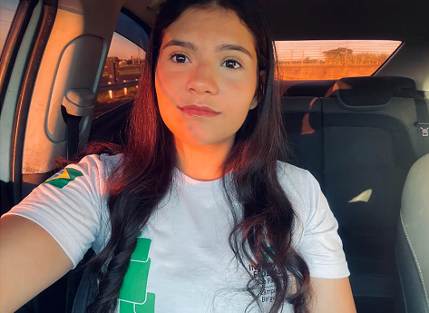
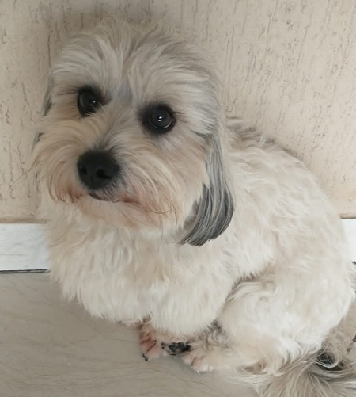

Sobre mim: Mariana Cavallin
Olá! Tudo bem?
Me chamo Mariana Cavallin de Melo e atualmente sou estudante do curso de informática integrado ao ensino médio da escola Instituto Federal do Câmpus Birigui. Antes do colegial, eu estudei na escola Izabel de Almeida Marin da sexta série até a nona série. Tenho 15 anos e no dia 14 de outubro de 2025 eu completo 16 anos de idade.
Penso em fazer cursar Ciências da Computação na universidade de Campinas, a Unicamp. Porém meu verdadeiro sonho era cursar História, o único problema é que não é um curso reconhecido e tenho medo de não conseguir dar uma vida boa para meus filhos trabalhando com História
Tenho um cachorrinho chamado Scooby, ele é o amor da minha vida. Segue uma foto dele em baixo
